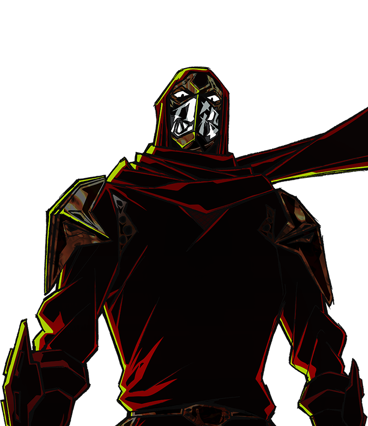

SLAY THE SPIRE 2 × NINJA SLAYER
DOMO，玩家=SAN。
这里是忍者杀手模组的情报站DESU。哪张牌被抢着要、哪张牌没人理，一眼就能看清。

最近两周
对局 通关
这些数怎么看？
- 抓取率
- 这张牌出现在奖励里时，被拿走的比例。
- 持有胜率
- 打完时牌组里有它的对局，通关的比例。胜率高不一定是牌强，也可能是拿它的人强。
- 每场打出
- 带着它的战斗里，平均打出几次。
AIEEEEEE!? 为什么这里一条数据都没有!?
看看具体数字
| 分组 | 数值 | 对局数 |
|---|
机制与卡牌战斗表现
| 卡牌 / 效果 | 涉及战斗 | 触发次数 / 总量 | 伤害 / 格挡 | 伤害 / 能量 |
|---|
暂无详细战斗记录。
想让自己的对局出现在这里？在模组设置里打开“公开完整战报”，打完一局就会自动上传。战报保留 90 天。